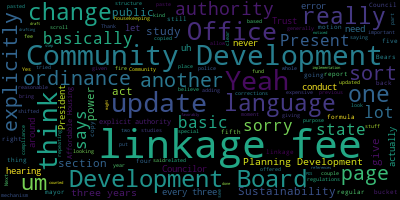
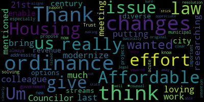

[Bears]: The Council Administration and Finance Committee March 26 2024 is called to order. Mr. Clerk, please call the roll.
[Leming]: Next President Collins. Councilor Lazzaro. Present. Councilor Leming. Present. What's he saying? Present. President Fares.
[Bears]: Present. Five present, none absent. The meeting is called to order. Action and discussion items 24-056 offered by Councilor Leming. Resolution to bring Linkage Free Ordinance in compliance with the State Act. Establishing the ordinance and 24 this is a resolution. 057 offered by Council of the main resolution out of formal housing to the linkage fee structure. We discussed this in City Council. Along with a resolution on a separate paper that was sent to the planning development Sustainability Office to update our linkage fee structure, which has not been 34 years out of date, 34 years of inflation not taken into account, 34 years of linkage fee funds that could have gone to things like fixing our roads, parks, addressing water and sewer, and also affordable housing. So all of these issues were behind on by about three decades without the updates to linkage fee. So I really appreciate Councilor Leming for the extensive research and bringing this forward. Tonight we're going to be looking at mainly updates to the city ordinance, which is based on the state establishing law. And those ordinance updates would be to make some corrections, I believe, to the existing ordinance to bring in an alignment with the state law. as well as to add another box of affordable housing linkage fees to the linkage fee structure. That was allowed by the State Enabling Act in 1989, but the city never implemented it. So I believe with that, I will turn it over to Councilor Leming, and if at any point you'd like me to share my screen to share potential ordinance changes or the red line copy, I'm happy to do so. And before, one thing I'll say before that, we also do have legal, this has all been reviewed by legal counsel. So, Councilor Leming.
[Leming]: Thank you. Council President Bears. I'm just joining on zoom at the moment. It would be, uh, good to have a copy of this shared on screen if that's that's possible. Um but generally so generally speaking, the 1st 2 4056, which just brings the linkage fees, um, in compliance with the state acts. It has a couple of, um. It has a couple of changes that sort of range from sort of basic housekeeping stuff. For instance, I believe it was 90. It was, hold on, just scrolling down to the exact places where I saw these. It was 94-10-1. 2.2 and the 94-10-3-2 and 94-10-4-2. There's like some very basic errors in the linkage fee ordinance where it says provide a fund for police and fire facility capital improvements through a linkage grant too. And then all of those all the linkage fee ordinances for police and fire and sewer All of them said to donate it to the Parks and Recreational Facilities Trust. That's just a basic copy and paste error that's present in our linkage fee ordinance. So I offered corrections to that. I also offered corrections in, and these sections all repeat, by the way, like essentially these four language fee ordinances are basically the four language fee buckets that are specified in chapter 94-10 are all sort of copied and pasted from one another. So I just, there's a lot of repeating changes, but in 94-10-1-2-3-4.4, if you'll Yeah, so if you just scroll down to like 9410. I'm sorry, just kind of like going on my own one of them. Yeah, this would be the page that I'm specifically looking at looking at at the moment is page 4. Yes, yes, right there. So it says, so in this it says calculations of linkage fees may be based on the methodology established by previous studies that outline methods for an escalating linkage fee formula. So the purpose of this is to explicitly allow a mechanism to let future updates of linkage fees be tied to something like a consumer index fund because the Office of Planning development and sustainability tells me that the study to actually recommend raises to these linkage fees, which we another resolution that went through the regular council meeting, ask them to conduct another 1 of those studies. Those are very expensive. So this is a mechanism to just sort of let them rely on 1 study. and then update it based on a predictable formula from year to year. This basically explicitly allows the Office of Community Development to explicitly update the linkage fees without having to do another expensive study every three years. Other changes to this basically take the explicit power to change linkage fees away from the Community Development Board while still letting the Community Development Board have power to to. Offer regulations around the linkage fees themselves and the authority to conduct public hearings while giving explicit authority to update linkage fees to the mayor and the Office of Community Um, and that's the special act. Yeah. Yeah. So, to be clear, the special act that was written in 1989 has no mention whatsoever of the community of the community development board. Um, it only gives authority to update linkage fees to the mayor and the office of community development. So I tried to look, like, parse through this as carefully as I could and just tried to find language that where it said the Community Development Board has the power to update linkage fees. And I shifted that back to the Mayor and the Office of Community Development. There is still language in here saying that the Community Development Board gets to set certain regulations and also conduct public hearings. But for the most part, it's a shift of power back to staff because, again, One, the Community Development Board never was given authority by the state in the first place to update linkage fees, and two, they never did it. And that's another thing that's made more clear here is if you'll go to page, to the top of page five, Yep, right there. This kind of just changes the language from no more than three years, which is a little bit unclear, to at least every three years that it requires the linkage fees to be updated. Again, this is exactly what it says in the States Act. It says that every three years linkage fees need to be updated which the community development board which was given this authority previously never did and according to the states act they never had the authority to actually do so this just this really just tries to bring it in more in compliance but it does give the community development board the authority to give public notice and public hearing so that the linkage fees can still have public input which I think is reasonable. It just doesn't give them explicit authority to actually update them itself. Let's see. Then I believe those are all the updates that are strictly related to 24-056. The related to 24-057, which starts on page 11. It's just, it's basically, a lot of it is besides like some slight change to the language behind 94.10.5.1 around the purpose of it. It's like basically all these linkage fee sections are just copied and pasted. So this is really just a copy and paste section around adding a fifth linkage structure to the, sorry, adding a fifth linkage bucket to the, existing linkage fee structures. And so this gives explicit authority for the Office of Planning, Development and Sustainability to put linkage fees into the Affordable Housing Trust, which needs sources of revenue. And so there's really not a whole lot to this section that's different from the previous four sections. It's really cookie cutter language. So, yeah, I think the The more important thing about this is actually the implementation of it. So, once we put this language in here, and we pass it all explicitly, just let the affordable housing trust be funded by linkage fees, which again is explicitly allowed by the state. as was reviewed by KP Law, then it would be up to the Office of Planning, Development, and Sustainability, which I've been in correspondence with them about, to conduct a linkage fee study that would, one, update the normal linkage fees, two, figure out what the linkage fees ought to be for the Affordable Housing Trust, and three, come up with a reasonable formula for updating these linkage fees every three years so that another study doesn't explicitly have to be done. That's about all I have to present these changes, and I look forward to hearing from my colleagues as to what they think of this.
[Bears]: Thank you. Any comments or questions from members of the committee? Councilor Tseng?
[Tseng]: Thank you. Um, I wanted to thank my colleague Councilor loving for putting so much work and effort into researching how to modernize this ordinance, as you mentioned at the last meeting. Um, I think this effort is really to bring this ordinance to the 21st century to enable the city to give us. the options of more diverse revenue streams, especially for new and important projects like the Affordable Housing Trust, which, you know, affordable housing has always been an issue, but I think it's now more acute than ever and an issue for municipal government to be solving and addressing. And these changes that you propose give us that. I really appreciate that you've also talked to legal counsel about this. that you've been able to get that squared away as well. I think these changes are very clear cut. They stick to the original intention of the resolution very clearly in that we're just basically making sure that this law, this ordinance aligns with the state laws. And so I'd be very happy to support these changes. Thank you.
[Bears]: I think that's what they're saying. Councilor Lazzaro.
[Lazzaro]: Thanks, Councilor. Leming, I appreciate this kind of sort of weeding through all of the line by line details of this kind of stuff is what really can pull out opportunities for funding that we wouldn't have necessarily known we were missing. So I think that's really important and exciting that we can utilize these opportunities. So I'm excited about it. And I think you've done a lot of great work here and I don't have any any notes really. So I'm excited to get going.
[Bears]: Councilor Lazzaro, Vice President Collins.
[Collins]: Thank you, President Bears. I think it's helpful to get these drafts and recommendations after they've already been run by legal counsels. We know the committee is spending its time on something that we know could potentially go forward, and I think that's, you know, of course, it's a nice use of our time to know that this has been pre-vetted, to have legal opinion saying, yes, this is doable under the Special Act and under the ordinances. It makes sense to bring it into alignment with the Enabling Act from several decades ago. to know that the language adjustments proposed are ones that we legally can go forward with. And it's also great to begin this process knowing that we do have the ability legally to add that fifth bucket. Fifth, is that right? Right. For an affordable housing linkage fee. And I think it's worth underlining, especially since you know, for many residents who aren't deeply, you know, intimately embroiled in municipal finance, I think it's worth underlining what linkage fees are and why they're set up that way. You know, these are fees that are levied upon developments to kind of correlate with the municipal public sector infrastructural things, the public infrastructure that new developments will have an impact on. Developments have an impact on police, fire, roads, water and sewer, and developments also have an impact on housing affordability. This is another phenomenon that new developments brought into the city also have an impact on, as well as how many more cars will be driving on our roads and how many more potential units will public safety have to respond to. So I think it's really in keeping with the spirit of what linkage fees are a tool for to say, you know, new developments coming in impact the housing market and so there should be some sort of formula set up by the experts, you know. that correlate with that issue in City Hall to figure out what that formula should be so that we can make sure that housing affordability is compensated for when affecting developments come into the city. All that to say, I think this is a very worthy project. I'm very happy to support this. I don't have any, well, I guess my specific question at this point through the chair to Councilor Leming would be, what would the next step on this be? I know that some of this rests on, a lot of these specific decision points rest on the Office of Planning, Development, Sustainability, working in concert with the mayor to do those, to do those updates, you know, at least every three years to make that formula. What other details have to be worked out on the committee side other than setting up the enabling parts of the ordinance? Thank you.
[Bears]: Just if I may, we do have Housing Planner McGor from Planning and Development Sustainability staff on. And I think in terms of next steps, I'll let Councilor Leming answer more, but we sent the resolution to PDS to actually do the thing. And then this is the legal fix to make sure that our ordinances are actually in alignment with what the state law requires. But Councilor Leming, you're recognized.
[Leming]: Well, the absolute next step is, so I just noticed some very basic housekeeping stuff in this draft that I submitted, which is, and so I'd like to, so I was just going through it right now, and I noticed that I, in rewriting, in writing the affordable housing bucket 94-10.5, could you, Councilor Bears, could you scroll to page 14, please? Where am I screening it? Yeah, I might have, just really quickly, I might have left some references there into 94.10.4, oh, sorry, 94.10.1, when they should be changed to 94.10.5 in the fifth one. So there's just a lot of repeating text here that... I see one here, yeah. So 10, five, six, uh, yeah. So just, uh, I guess, motion to correct the references to, uh, in 94, 10, five to 94, 10, one where appropriate. Cause again, it's just some very basic drafting drafting errors. Yeah.
[Bears]: Is that the only one?
[Leming]: I think I counted. I counted three. But could I just motion to have them all sort of?
[Bears]: Yes. Yes. Yeah. Yes. Honestly, what might be easiest, since you have the Word document, is if you change it and send it. Yeah. I'll go ahead and do that. Great. I see that I see in the procedure section and the exemption section and then in the credit section that needs to be updated from section 1 to section 5.
[SPEAKER_03]: Yes.
[Bears]: On the motion of Councilor Leming to make the correction seconded by Councilor Tseng, all those in favour? Opposed? Motion passes.
[Leming]: Okay, thank you. But other other than that, like, again, at the ordinance level, I don't think that there's really the the only the only sort of thing that I can think of is potentially some the relate likes, whatever. If somebody has any strong opinions about the relationship between the Office of Planning, Development and Sustainability and the Community Development Board, I know that I shifted around a few of the, in this draft here, a few of the powers from one to the other, again, giving the Office of Planning, Development and Sustainability the explicit authority to update the linkage fees themselves. So if there are any recommendations from PDS to change those, then I would be amenable to that. But otherwise, I think that other than that, and those are very minor, Errors that I just pointed out. I can't think of a whole lot else that would really need to be done with the ordinance itself. Most of the important steps, once this is passed, would be at the implementation phase. So I would love to hear from PDS about this, if they have any thoughts themselves.
[Bears]: Yes, I will recognize our housing planner. Just one moment. I also want to note this is a zoning ordinance change, so this is going to have to go through the zoning ordinance change process. Now that we have a draft, we're probably going to have to, I mean, there's a number of steps that are going to have to be taken, but we're going to have to, at the very least, schedule public hearings, the Community Development Board and the City Council, and follow the zoning ordinance amendment process, which is slightly different from, I don't think we've passed any zoning amendments this term yet, so it's a little more detailed. Go to our housing planner. You're recognized. Yes.
[Mogul]: Good evening, everyone. Thank you, Councilor Leming and other council members for bringing this discussion forward. To respond to Councilor Collins and Councilor Leming's status update on what the Office of Planning Development and Sustainability are doing, currently we are reviewing the budget allocation to conduct the next study. We are in touch with other community city staff who have conducted similar studies, and we are also exploring potential consultants who specialize in doing a next study on linkage fees. I have a few, two comments on the proposed ordinance. I think the proposal of development linkage fee to support affordable housing is timely. Thank you for that. Medford's development linkage fee is quite unique, that it imposes a fee on residential development along with non-residential development, which is quite different from other communities in the region. We also have inclusionary housing program, which requires residential developments of a certain size to provide for affordable housing. I think as part of the next study, it would be important to sort of review how at what levels of this imposed fee would adversely affect future residential projects because we also have the inclusionary housing program. And my second comment would be that there are quite a few references to density bonus in the existing ordinance and the proposed ordinance. And at this point, the city does not have a density bonus program. In future, if the city would adopt an affordable housing density program, then it should be made clear if the affordable housing density program or the projects under affordable housing density bonus would be subject to this development linkage fee, or would they be exempt from that? Thank you.
[Bears]: Thank you so much. And, you know, I think we're going to have a lot of chances as this moves through the zoning amendment process. Obviously, we'll get a formal recommendation from the Community Development Board in consultation with the PDS staff as well. So, we will definitely get all parties involved and their input before the final zoning amendment. Any further discussion by members of the Council? Seeing none, is there any discussion by members of the public in the chamber or on Zoom? Please raise your hand on Zoom. Seeing none, is there a motion on the floor? Council Vice President Collins.
[Collins]: I want to again thank Councilor Leming for his work on this. I'm really glad to be getting the ball rolling on really modernizing our linkage fees and appreciate the collaboration with the Office of Planning, Development and Sustainability. Thank you so much to our housing planner for weighing in on this tonight and for, you know, your office's review of the document. I would motion to keep the paper in committee. I look forward to hearing staff's comments on the proposed ordinance changes.
[Leming]: second um just my understanding of keeping in committee for what reason sorry what would it be sorry if we're going to report it favorably out um what would we report it back to regular to a regular session or would how would this be included in the zoning like what motion would be yeah so favorably not favorable we just reported that doesn't we don't really do that but we would just report it out
[Bears]: To the regular meeting to initiate the zoning amendment process so we would need to put this on as an amendment to the zoning ordinance on the regular meeting, and then that kicks off a series of procedural requirements to notice referring to. You know, basically, we'd put it on referring to community development board. They would then hold a public hearing. They would make a set of recommendations. Then we would consider those recommendations during a meeting, which we held a public hearing, and then we would take a vote on the final zoning ordinance amendment. So, if we keep it in committee, we can't do any of that.
[Collins]: I have a clarifying question then, which was, I thought that city staff was also going to provide further comment on the draft of the ordinance. If that's not the case, I would withdraw my motion in favor of reporting it out of committee, but I thought that we were going to further amend it before pushing it forward.
[Leming]: Councilor Levee. Yeah, I think, and I need you to clarify this, but I think that that would be part of the process that Council President Bears was talking about.
[Bears]: Yeah, that would be through, when the Community Development Board has its hearing, the Planning Development staff would be part of that process and could suggest recommendations to the Community Development Board to suggest to us.
[SPEAKER_03]: Great. In that case, I have a motion to report this paper out of committee.
[Bears]: All right. On the motion of Councilor Collins to report the paper out of committee, seconded by Councilor Leming. All those in favour?
[SPEAKER_03]: Aye.
[Bears]: Opposed? Motion passes.
[SPEAKER_03]: Motion to adjourn.
[Bears]: Motion of Council Vice President Collins to adjourn, seconded by Councilor Lemme. All those in favor? Opposed? Motion passes, meeting is adjourned.
|
total time: 5.73 minutes total words: 925 |
total time: 11.8 minutes total words: 1615  |
total time: 1.16 minutes total words: 182  |
total time: 0.62 minutes total words: 86 |
|
total time: 3.69 minutes total words: 617 |
|||
{kind=link}
{kind=link}
{kind=link}
{kind=link}
{kind=link}